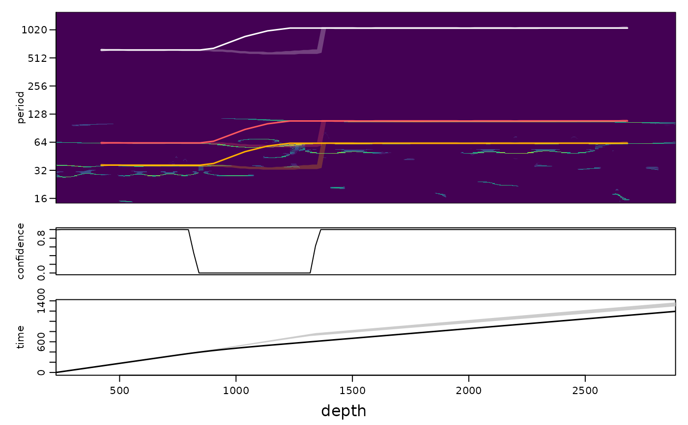

Recommended workflow for continuous astronomical tracking of noisy records
Source:R/track_hmm.R
track_astro_auto.RdRuns the workflow that worked best in stress tests (changing sedimentation rates with jumps, red noise):
a scalogram that keeps weak cycles:
analyse_wavelet_sstwithomega_nr = 12and four reassignment iterations (scalogram = "msst", default), or the sharper superlet synchrosqueezing (analyse_superlet_sst,scalogram = "superlet_sst"), which was more accurate in records with moderate noise but drops weak cycles in very noisy records;astronomically constrained tracking with all cycles (
track_astro_hmm), with deep-time periods fromage_maork_yr, a realistic sedimentation-rate range, and optionally a rough guide and the depths of known hiatuses or abrupt facies changes;an independent check: the sedimentation rate is also estimated from long windows only (an eCOCO-like correlation of red-noise-corrected spectra with the astronomical template), and intervals where the posterior of the track is spread are flagged. Check flagged intervals by eye, with
ecoco_classicor with amplitude modulation tests.
Tests on real records (ODP 1119, Orcadian Basin 12/13-1, KTG-01, Klonk, Bisciaro, Pod Barrandovem) showed that the
tracking is only reliable with an approximate mean sedimentation rate (e.g. from the approximate duration known from
biostratigraphy or radiometric ages), given as guide with a wide guide_tolerance; without it the track
often settled on a sedimentation rate that was about twice too high or too low (the wrong cycles). In records where only
the eccentricity cycles are resolved, the result followed such a prior closely, i.e. the record itself did not
constrain the mean rate. The duration argument sets such a prior directly.
Usage
track_astro_auto(
data,
sedrate,
age_ma = 0,
k_yr = NULL,
astro_periods = NULL,
scalogram = c("msst", "superlet_sst", "cwt", "chirplet_sst"),
omega_nr = 6,
guide = NULL,
guide_tolerance = 0.4,
duration = NULL,
duration_tolerance = 0.5,
constraints = NULL,
jump_depths = NULL,
long_weight = 0,
flag_ratio = 0.25,
min_confidence = 0.5,
flag_long = FALSE,
dj = 1/50,
method = c("both", "chirp", "hmm"),
jump_prob = 0,
...
)Arguments
- data
Record to analyse (matrix or data frame with two columns: depth in column 1, proxy value in column 2; further columns are ignored and rows with missing values removed). Required, no default.
- sedrate
Range of the sedimentation rate in which the track is searched (numeric vector
c(lower, upper), > 0, in depth units per kyr, e.g. m/kyr for a record in metres). It also sets the period range of the scalogram. Required, no default.- age_ma
Age of the record in Ma (numeric, >= 0), used to compute the deep-time astronomical periods and their weights with
astro_periods_tracking; ignored whenastro_periodsis given.Default=0(present-day periods).- k_yr
Optional precession constant (numeric, the period of the axial precession in years) passed to
astro_periods_trackinginstead of the AstroGeo22 value forage_ma.Default=NULL.- astro_periods
Optional astronomical periods (kyr) replacing the ones from
age_ma: a numeric vector of periods or a data frame with the columnsterm,family,period,weight(the format ofastro_periods_tracking).Default=NULL.- scalogram
Scalogram that is computed and tracked (character, one of
"msst","superlet_sst","cwt","chirplet_sst"):"msst"analyse_wavelet_sstwithomega_nr = 12and four reassignment iterations;"superlet_sst"analyse_superlet_sst;"chirplet_sst"matched chirped wavelets (analyse_chirplet_sst; sharper where the sedimentation rate changes quickly, about 4 times slower);"cwt"a plain Morlet scalogram (analyse_wavelet) withomega_nr. In records in which only the eccentricity cycles are resolved, a CWT with a lowomega_nr(5-6) followed the ridges more continuously than the synchrosqueezed maps (Klonk, Pridoli).Default="msst".- omega_nr
Number of oscillations of the Morlet wavelet (numeric, > 0; larger values give a finer period resolution and a coarser depth resolution); only used with
scalogram = "cwt".Default=6.- guide
Optional rough sedimentation rate curve (two-column data frame or matrix: depth, sedimentation rate in depth units per kyr), passed to
track_astro_hmmand to the scalogram evidence oftrack_chirp_hmm; rates outsideguide * (1 +- guide_tolerance)are penalised.NULLwithdurationbuilds a guide from the duration.Default=NULL.- guide_tolerance
Relative half width of the band around
guide(numeric, > 0); replaced byduration_tolerancewhen the guide is built fromduration.Default=0.4.- duration
Approximate duration of the record (numeric, kyr), e.g. from biostratigraphy or radiometric ages. If given and
guideisNULL, it is turned into a guide with the constant mean sedimentation rate (thickness /duration) and a tolerance ofduration_tolerance. Strongly recommended for real records.Default=NULL.- duration_tolerance
Relative tolerance of the guide built from
duration(numeric, > 0; 0.5 lets the rate differ by a factor 1.5 from the mean).Default=0.5.- constraints
Optional duration constraints for the scalogram track (data frame with the columns
from,to(depths),duration(kyr) and optionallytolerance(relative, default 0.025)), e.g. from radiometric ages or well-dated stage boundaries, passed totrack_astro_hmm. Recommended whenever available: with the Pridoli duration (Klonk) the published age model was reproduced within about 0.3 Myr; without it the track settled on other cycles.Default=NULL.- jump_depths
Optional depths of known hiatuses or abrupt facies changes (numeric vector, depth units) where the jump probability is raised, passed to
track_astro_hmm(and to the scalogram evidence of the chirp-matched track).Default=NULL.- long_weight
Weight of the long-window evidence inside the main scalogram track (numeric, >= 0; passed to
track_astro_hmm); set to 1 for records in which the cycles are barely visible. The independent long-window check is always computed.Default=0.- flag_ratio
Relative difference between the track and the long-window estimate above which a position is flagged when
flag_long = TRUE(numeric, > 0; 0.25 flags ratios beyond 1.25 or below 1/1.25).Default=0.25.- min_confidence
Positions where less than this posterior probability lies within 10 percent of the tracked sedimentation rate (column
confidence10of the scalogram track) are flagged (numeric, between 0 and 1).Default=0.5.- flag_long
Also flag positions where the long-window estimate disagrees by more than
flag_ratio(logical, TRUE or FALSE). In real records the long-window estimate was itself often biased, so its disagreement is reported incheckbut not used for the flags by default.Default=FALSE.- dj
Spacing of the period axis of the scalogram and of the chirp-matched spectra, in octaves (numeric, > 0; smaller values give a finer grid and a slower run).
Default=1/50.- method
Which trackers are run (character, one of
"both","chirp","hmm")."both": the scalogram is tracked withtrack_astro_hmm(track_hmm) and, in addition, chirp-matched windowed spectra (analyse_chirp_eha, automatic windows and gradient grid) are tracked withtrack_chirp_hmmwith the scalogram evidence added for locality; this chirp-matched track is returned astrack,checkholds both rates and their disagreement, andagreementthe fraction of the record where they are within 10 percent."chirp"gives the same result (the scalogram track is still computed for the flags and the check);"hmm"runs only the scalogram tracker, whose result is thentrack. In the tests the chirp-matched track was better or equal everywhere: CIP Case 3 with the rate unknown over 1-20 cm/kyr, correlation with the true rate 0.97 against 0.08 for the HMM track (92 against 40 percent within 10 percent); CIP Case 2, both 0.93-0.95; synthetic records with three abrupt jumps, 0.86-0.94 against 0.00-0.92. Where the two agree both are probably right; where they disagree, look atrate_gramandplot_astro_evidence. The chirp-matched tracking adds 1-2 minutes.Default="both".- jump_prob
Jump probability of the chirp-matched tracker (numeric, between 0 and 1), passed to
track_chirp_hmm; not used withmethod = "hmm". Tested on all records: with1e-3the age errors of two of the four synthetic records with jumps halved (57 and 70 against 123 and 215 kyr) and those of the other two doubled, and Case 3 collapsed (0.97 to 0.10), so it stays off unless hiatuses or abrupt facies changes are known.Default=0.- ...
Further arguments passed to
track_astro_hmmfor the main scalogram track (e.g.sd_change,normalise,n_samples,seed).
Value
A list with scalogram, track (see track_astro_hmm), check (data frame:
depth, sedrate of the track, long-window sedrate, ratio, confidence, flagged) and flags (flagged intervals:
from, to). Plot with plot_track(x$track, x$scalogram, flags = x$flags).
Examples
# \donttest{
set.seed(1)
t <- seq(0, 1500, by = 0.5)
ecc <- 0.4 * cos(2 * pi * t / 405) + 0.25 * cos(2 * pi * t / 125)
x_t <- (1 + ecc) * (sin(2 * pi * t / 23.7) + 0.6 * sin(2 * pi * t / 19)) +
0.7 * sin(2 * pi * t / 41)
sr <- ifelse(t < 700, 1.5, 2.6) # a jump of the sedimentation rate
zt <- c(0, cumsum(sr[-1] * diff(t)))
z <- seq(0, max(zt), by = 1)
x <- approx(zt, x_t, z)$y + rnorm(length(z), sd = 1.5)
res <- track_astro_auto(data.frame(z, x), sedrate = c(0.8, 5))
#> track_astro_hmm: cycles used for changes of the rate only (not resolved over the whole sedimentation-rate range): 405.7
#> track_astro_hmm: cycles used for changes of the rate only (not resolved over the whole sedimentation-rate range): 405.7
#> analyse_chirp_eha: windows 455 and 948
#> track_astro_hmm: cycles used for changes of the rate only (not resolved over the whole sedimentation-rate range): 405.7
plot_track(res$track, res$scalogram, show = c(405, 41, 23.7), flags = res$flags)

# }